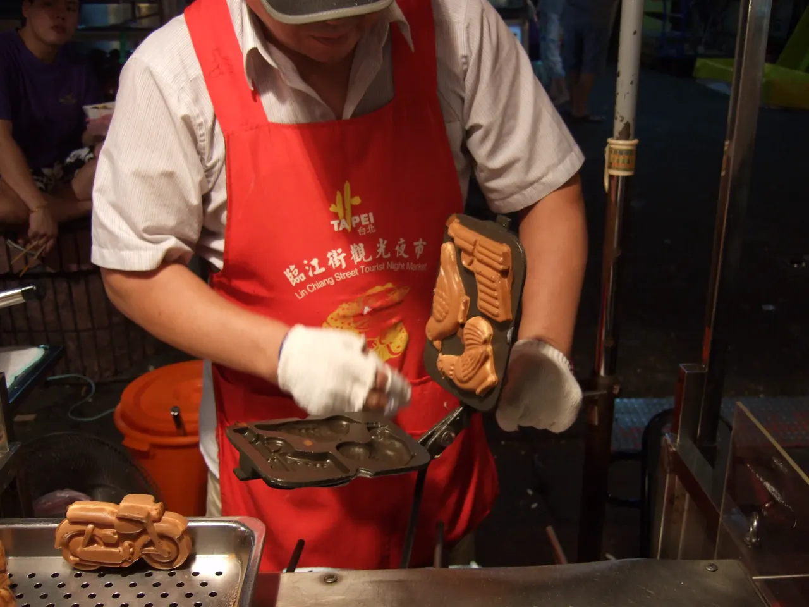
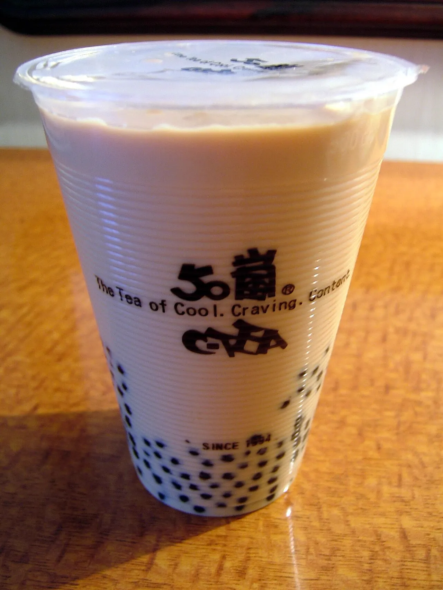

Taiwan on a plate
Taiwanese food blends local traditions with influences from many communities. Night markets make small tastings especially easy.

Night markets
Start in Taipei's Raohe or Shilin markets, then try smaller evening markets in Tainan or Kaohsiung.

Bubble tea
Chewy tapioca pearls, tea and milk form a refreshing snack, but the combinations are nearly endless.
| Dish | Description | Where to try it |
|---|---|---|
| Niu rou mian | Beef noodle soup with clear or rich broth. | Noodle shops and night markets |
| Xiaolongbao | Small soup dumplings folded around a savoury filling. | Din Tai Fung and local dumpling houses |
| Bubble tea | Milk or fruit tea shaken with toppings such as tapioca pearls. | Tea shops across Taiwan |
| Chou doufu | Fermented tofu, crisp-fried or steamed with herbs. | Shilin and Raohe night markets |
| Oa jian | An egg and oyster omelette with a savoury sauce. | Night markets in Taipei and Tainan |